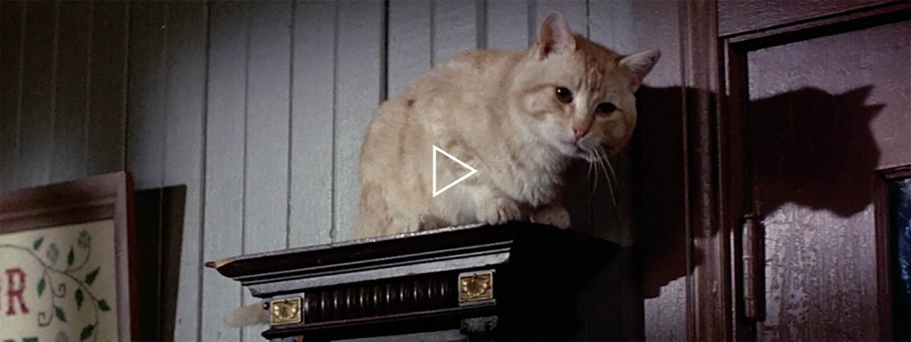

Una exploración de la leyenda sobre el gato más celebrado de Hollywood, Orangey, en esta adaptación del ensayo homónimo de Dan Sallitt. La prolífica filmografía de 16 años del felino incluye papeles en Rhubarb (1951), The Incredible Shrinking Man (1957), The Diary of Anne Frank (1959), y Breakfast at Tiffany’s (1961). La historia de Orangey, un protegido del entrenador de animales Frank Inn, lleva a Sallitt, que comparte pantalla aquí con otra curiosa co-estrella, por el camino del misterio. Este ensayo educacional en video celebra y desentraña la historia de The Hardest Working Cat in Showbiz.
